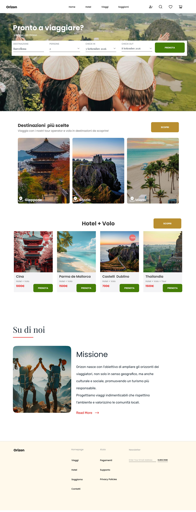

Questo progetto analizza e riprogetta l’esperienza utente del sito di Orizon, un’app di meditazione progettata per adattarsi a uno stile di vita ecologico.
Orizon è sito di viaggio progettato specificamente per integrarsi in uno stile di vita ecologico.
Redesign: Orizon Web
Link: Ex Orizon
Creare un sito coerente con l'identità del brand, che comunichi i valori di sostenibilità e faciliti l'accesso al servizio attraverso scelte progettuali semplici e coerenti.
Il redesign si impegna ad offrire un prodotto organizzato capace di comunicare i valori del brand e facilitare l’accesso al servizio attraverso scelte progettuali semplici e coerenti.

Questo è il mio portfolio, grazie per averlo visualizzato!
Se hai voglia, controlla pure le altre pagine.